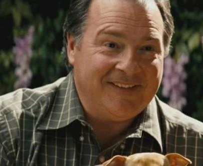
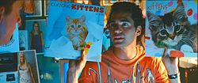
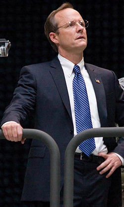
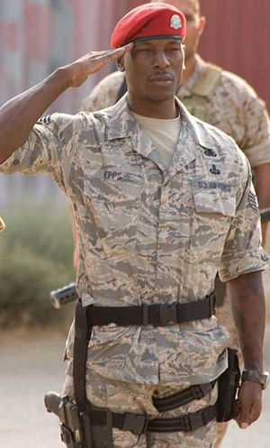
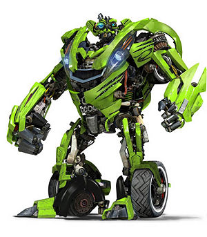
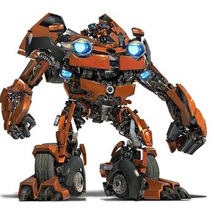
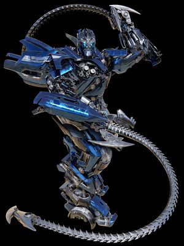
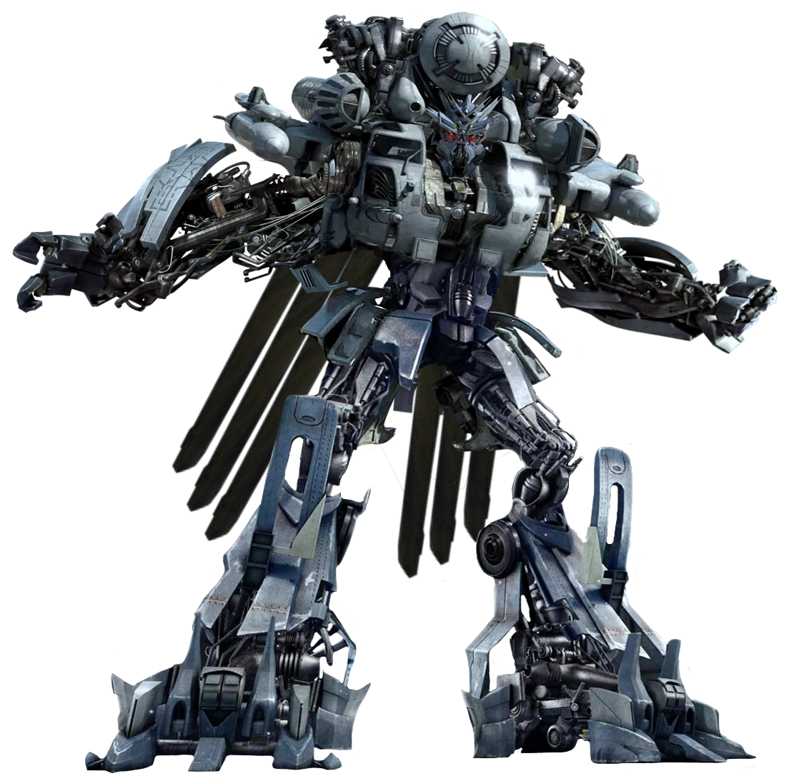
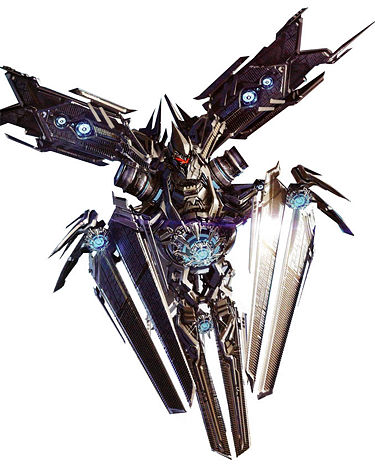

| Personaggio |
Descrizione |
Immagine |
| Sam Witwicky |
interpretato dall'attore statunitense Shia LaBeouf, Sam in questo secondo capitolo
che cerca di iniziare l’università e lasciarsi alle spalle le avventure del primo film ma
nonostante i suoi sforzi, viene nuovamente coinvolto nella guerra tra Autobot e Decepticon,
diventando un elemento chiave della trama. |
 |
| Mikaela Banes |
Il personaggio è interpretato dall'attrice Megan Fox.
Inizialmente sembra la classica ragazza popolare del liceo, ma è in realtà una meccanica esperta.
Possiede una conoscenza approfondita delle auto e della meccanica, abilità ereditate da suo padre.
È "tosta", indipendente e non teme di sporcarsi le mani o affrontare situazioni pericolose. |
 |
| Ron Witwicky |
È interpretato dall'attore Kevin Dunn.
È il padre comico e spesso ignaro delle avventure che coinvolgono suo figlio, gli Autobot e i Decepticon.
Sposato con Judy Witwicky, è molto protettivo nei confronti della sua famiglia e del suo giardino.
Nei film, la sua professione viene indicata come giardiniere. |
 |
| Judy Witwicky |
Interpretata dall’attrice statunitense Julie White.
È la madre di Sam Witwicky e viene mostrata come una donna protettiva, ironica e un po’ invadente,
ma allo stesso tempo affettuosa e di supporto alla sua famiglia. |
 |
| Leo Spitz |
Interpretato da Ramón Rodríguez.
Studente universitario, di origine ispano-americana.
Gestisce un sito web chiamato “The Real Effing Deal”, dove pubblica teorie complottiste sui robot alieni
e sul fatto che il governo nasconda la verità. Condivide la stanza del dormitorio con Sam Witwicky.
È ossessionato dai Transformers e dalle cospirazioni, ma inizialmente non ha prove concrete. |
 |
| Alice |
Interpretata da Isabel Lucas.
Alice appare quando Sam Witwicky inizia la sua vita al college. Si mostra subito interessata a lui,
cercando di sedurlo e creando tensione con Mikaela. In realtà è un Pretender, un tipo di Decepticon capace
di assumere sembianze umane. |
 |
| Galloway |
Interpretato da John Benjamin Hickey
È un personaggio antipatico e ostile verso gli Autobot perchè ritiene che la loro presenza sulla Terra attiri i Decepticon
e mette in dubbio la loro alleanza con gli umani.Cerca di limitare l’azione degli Autobot e di ridurre la loro libertà operativa,
creando tensioni con Optimus Prime e con i militari e propone di espellere gli Autobot dalla Terra,
convinto che senza di loro i Decepticon non avrebbero motivo di attaccare. |
 |
| Professor Colan |
Interpretato da Glenn Morshower
Colan è il professore che tiene una lezione a cui Sam partecipa.
Durante la lezione, Sam ha una crisi: comincia a scrivere compulsivamente strani simboli sulla lavagna,
sotto lo sguardo incredulo del professore e degli studenti. |
 |
| Seymour Simmons |
interpretato da John Turturro un'attore statunitense.
All’inizio del film è un ex-agente caduto in disgrazia dopo lo scogliemento del Settore Sette, che lavora in una macelleria gestita
dalla sua famiglia.
viene rintracciato da Sam Witwicky e Mikaela Banes, che hanno bisogno delle sue conoscenze sui Transformers e sui simboli che
tormentano Sam |
 |
| Capitano Lennox |
interpretato da Josh Duhamel un'attore e modello statunitense nel film intepreta il Capitano dell’esercito statunitense,
leader di una squadra di ranger.È tra i primi militari a scontrarsi con i Decepticon
in Medio Oriente e successivamente collabora con gli Autobot per difendere la Terra. |
 |
| Sergente Morshower |
interpretato da Tyrese Gibson attore, cantante e modello statunitense nel film interpreta il
Sergente dell’aeronautica statunitense, membro della squadra guidata dal Capitano Lennox. |
 |
| Colonello Sharp |
interpretato da Glenn Morshower Attore statunitense che nel film interpreta il Colonnello dell’aeronautica statunitense.
È al comando della base militare in Qatar che viene attaccata dal Decepticon Blackout all’inizio del film.
Rappresenta la catena di comando militare e la reazione immediata dell’esercito di fronte alla minaccia aliena. |
 |
Autobot
| Personaggio |
Descrizione |
Immagine |
| Optimus Prime |
Optimus Prime è il leader degli Autobot, doppiato da Peter Cullen, doppiatore del personaggio a partire dagli anni ottanta.
È introdotto come un comandante saggio e coraggioso, simbolo di speranza e giustizia nella lotta contro i Decepticon.
Optimus e capice di trasformarsi in un Peterbilt 379 Semi Truck, un camion pesante americano con livrea rossa e blu e dettagli a fiamme.
Combatte con 2 Ion Blaster(un'arma precisa e potente) e delle spade di Energon |
 |
| Bumblebee |
Non presenta doppiatori essendo il guasto alla scatola subito in battaglia su Cybertron.
È stato il primo contatto tra gli autobot e Sam essendo la prima auto di Sam e di conseguenza il suo protettore.
Bumblebee all'inizio lo vediamo capace di trasformarsi in una Chevrolet Camaro gialla con strisce nere del 1977 per poi
cambiare in una Chevrolet Camaro Concept del 2006 più moderna e sportiva.
combatte con un cannone al plasma montato sul braccio destro e dei missili e Blaster integrati sulle spalle
È Leale e protettivo, sempre pronto a difendere Sam e gli umani è giocoso e affettuoso, mostra un lato più umano e
simpatico rispetto agli altri Autobot è coraggioso, affronta i Decepticon senza esitazione e Comunica
in modo creativo, usa la radio per esprimere emozioni e pensieri. |
 |
| IronHide |
Doppiato da Jess Harnell. Autobot esperto in armi e combattimento e braccio destro di Optimus Prime.
È il “militare” del gruppo, sempre pronto allo scontro e protettivo verso gli alleati umani.
si trasforma in un GMC TopKick C4500 pickup nero, combatte con dei cannoni al plasma montati su entrambe le braccia.
Ha una Grande resistenza fisica, che lo rende uno dei combattenti più duri tra gli Autobot.
Ha un carattere aggressivo e diretto, sempre pronto a combattere è leale, profondamente fedele a
Optimus Prime e alla causa degli Autobot, molto Protettivo, soprattutto verso gli umani, anche se con un atteggiamento brusco e
ironico e ruvido, spesso con battute secche e militari. |
 |
| Ratchet |
viene doppiato da Robert Foxworth. È il “medico di campo” del gruppo, responsabile di riparazioni e supporto tecnico.
si transforma in un Hummer H2 giallo modificato in versione veicolo di soccorso. È equipaggiato con un
cannone laser montato sul braccio, usato in combattimento; armi energetiche secondarie, per difesa e supporto e
strumenti medici integrati, che gli permettono di riparare e curare gli Autobot durante le battaglie.
Si presenta con un carattere responsabile e premuroso, sempre attento alla salute dei suoi compagni.
Pragmatico, unisce competenze mediche e capacità di combattimento.Leale, fedele a Optimus Prime e alla missione degli Autobot.
Serio e professionale, e molto meno ironico rispetto ad altri membri del gruppo.
|
 |
| Sideswipe |
ll doppiatore che gli dà voce nel film è André Sogliuzzo
Sideswipe è uno degli Autobots più spettacolari introdotti nel secondo film della saga. La sua personalità
è quella di un guerriero elegante ma spietato. Non ha pietà per i Decepticon e combatte con una precisione quasi artistica.
Si trasforma in una Corvette Stingray Concept del 2009. Combatte usando delle lame Cybertanium montate sugli avambracci,
usate per combattimenti corpo a corpo, ma che all'occasione può anche lanciare mentre per i combattimenti a distanza usa due fucili.
|
 |
| Arcee |
Doppiata da Erin Naas.
Arcee, sorella di Cromia e Elita, è descritta come una guerriera determinata e coraggiosa. Nonostante sia più piccola rispetto a molti suoi compagni,
compensa con velocità e manovre aggressive. Ha un atteggiamento pragmatico e diretto, ma nasconde anche un lato vulnerabile che
nascono dai dubbi sulle proprie capacità e le perdite subite durante la guerra .
Arcee è specializzata nel combattimento a distanza e utilizza un crossbow blaster, con cui è una tiratrice infallibile.
Nel film si transforma in una ducati 848 Superbike rosa, scelta per rappresentare velocità e agilità. |

|
| Cromia |
Viene doppiata da Grey Griffin.
Rispetto alle sue sorelle, ha un carattere più aggressivo e diretto
è la “guerriera dura” del trio, sempre pronta a buttarsi nella mischia senza esitazioni(infatti muore malamente).
Se Arcee rappresenta la precisione e l’agilità, Chromia incarna la forza e la determinazione.
Per quanto riguarda l’armamento, Chromia è equipaggiata con un cannone montato sul braccio.
La sua modalità veicolo è una Suzuki B-King blu, una moto muscolosa e potente che riflette perfettamente il suo stile di combattimento.
|

|
| Elita-One |
Doppiata da Kari Wahlgren
Elita-One è la più “silenziosa” e misteriosa del trio formato da Arcee e Chromia.
Se Arcee rappresenta agilità e precisione, e Chromia la forza aggressiva, Elita incarna la parte più riflessiva e tattica.
Per quanto riguarda l’armamento, Elita-One è equipaggiata con armi leggere e sistemi di fuoco rapidi, simili a quelli delle sue sorelle,
ma il suo ruolo è più di supporto e coordinamento.
La sua modalità veicolo è una Suzuki GSX-R1000 viola, scelta per differenziarla dalle altre due moto e per sottolineare
il suo carattere più elegante e meno aggressivo. |

|
| Wheelie |
È doppiato da Tom Kenny.
Wheelie è uno dei personaggi più particolari della saga: a differenza di molti altri Autobots, non è un grande guerriero
né un combattente imponente. È piccolo, nervoso e inizialmente un Decepticon, ma nel corso del film cambia schieramento e
diventa un Autobot. Questo lo rende un personaggio ambiguo e divertente, spesso usato per alleggerire la tensione con battute
e atteggiamenti buffi. La sua modalità veicolo è un camioncino telecomandato blu |

|
| Jetfire |
Viene doppiato da Mark Ryan.
Jetfire è un Autobot che a differenza degli altri, non è giovane né agile, ma un vecchio guerriero stanco e logoro.
La sua caratterizzazione è unica perché porta sullo schermo il tema dell’età e della memoria: è un ex Decepticon che ha cambiato
fazione, e questo lo rende un personaggio complesso, con un passato tormentato e un presente segnato dalla saggezza.
Il suo carattere è burbero e ironico. Jetfire si lamenta spesso della sua condizione fisica, fa battute sarcastiche e mostra un
atteggiamento quasi “umano” nella sua stanchezza. Nonostante ciò, conserva un grande senso di lealtà e un profondo rispetto per la
causa degli Autobots. È dotato di armi pesanti e capacità di volo, ma nel film appare ormai arrugginito e malfunzionante.
La sua modalità veicolo è un Lockheed SR-71 Blackbird, uno dei jet da ricognizione più iconici della Guerra Fredda. |

|
| Skids |
Doppiato da Tom Kenny, lo stesso attore che dà voce a SpongeBob,
Skids, insieme al fratello gemello Mudflap, fa parte del duo noto come i “Twins”. Sono due piccoli Autobots che portano comicità
e caos nel film, ma che hanno anche suscitato molte polemiche per il modo in cui sono stati caratterizzati. Il carattere di Skids è
quello di un robot chiassoso, immaturo e un po’ arrogante. Ama vantarsi, parlare troppo e spesso litiga con Mudflap, creando
siparietti comici che alleggeriscono la tensione delle battaglie. Non è un guerriero disciplinato come Optimus o Sideswipe:
è più un pasticcione che si butta nelle situazioni senza pensarci troppo. Nonostante ciò, dimostra coraggio e lealtà verso gli Autobots,
soprattutto nei momenti critici.
La sua modalità veicolo è una Chevrolet Beat verde, una piccola city car compatta. |

|
| Mudflap |
Nel film è doppiato da Reno Wilson.
Mudflap è l’altra metà del duo noto come i “Twins”, insieme a Skids.
Se il fratello verde è chiassoso e arrogante, Mudflap è altrettanto esuberante ma con un carattere leggermente diverso:
più impulsivo e meno riflessivo, tende a buttarsi nelle situazioni senza pensarci troppo. Questo lo rende comico,
ma anche coraggioso nei momenti di pericolo.
Il suo carattere è quello di un robot vivace, testardo e un po’ pasticcione.
Ama discutere con Skids e i due passano gran parte del tempo a litigare, ma quando serve dimostrano di essere uniti e
pronti a combattere. Mudflap è meno vanitoso del fratello, ma altrettanto rumoroso e caotico.
La sua modalità veicolo è una Chevrolet Trax arancione, una piccola crossover compatta. |

|
| Jolt |
Non ha un doppiatore essendo che ha pochi momenti sullo schermo, ma compare in momenti chiave del film.
Jolt è un personaggio piuttosto silenzioso e poco sviluppato nel film, ma la sua funzione è fondamentale.
È un Autobot tecnico e ingegnoso, più che un guerriero da prima linea. Non ha la comicità di Wheelie né la ferocia di Sideswipe:
il suo ruolo è quello di supporto, con un carattere pragmatico e concentrato sulla missione.
La sua arma principale sono i fruste elettriche, che utilizza per canalizzare energia e colpire i nemici.
Jolt si trasforma in una Chevrolet Volt blu elettrico, un’auto ibrida plug-in. |

|
Decepticon
| Personaggio |
Descrizione |
Immagine |
| Megatron |
Doppiato da Hugo Weaving.È Leader supremo dei Decepticon e nemico giurato di Optimus Prime,
viene risvegliato dalla settore sette dopo essere rimasto congelato per decenni,
il suo obiettivo è quello di uccidere Optimus Prime per far tornare in forze il suo Maestro Megatronus Prime detto The fallen.
Un Cybertronian Tank con capacità di volo, una combinazione che lo rende ancora più pericoloso, e equipaggiato con Fusion Cannon
un'arma devastante montata sul braccio, capace di distruggere qualsiasi cosa con un singolo colpo; Spade e lame energetiche,
usate nei combattimenti corpo a corpo e una Forza fisica immensa, superiore a quella della maggior parte degli Autobot.
Megatron è tiranno spietato che domina i Decepticon con la paura e ossessionato dal potere e dalla conquista ma molto intelligente
e manipolatore, capace di strategie complesse. |
 |
| Starscream |
Doppiato da Charlie Adler. Braccio destro di Megatron, ma con ambizioni di leadership è il classico “secondo in comando”
che trama nell’ombra per prendere il posto del leader. Si trasforma in un caccia F-22 Raptor. È equipaggiato con
Missili aria-aria e aria-terra, integrati nella sua forma di jet; Cannoni energetici, usati in combattimento ravvicinato.
È molto agilite il che lo rende uno dei Decepticon più pericolosi in battaglia. È Ambizioso e traditore, sempre pronto
a spodestare Megatron, ama combattere e mostrare la sua superiorità ma è allo stesso tempo un codardo quando conviene e
non esita a ritirarsi se la situazione diventa troppo rischiosa. |
 |
| Grindor |
Grindor non ha una personalità molto sviluppata nel film: è più una “forza bruta” che un personaggio con dialoghi o motivazioni
proprie. È un Decepticon silenzioso, obbediente e spietato, usato come supporto nelle battaglie. La sua funzione principale è quella
di rinforzo militare, un gigante che incute timore per la sua mole e potenza.
Grindor si trasforma in un elicottero da trasporto militare Sikorsky MH-53 Pave Low, un velivolo enorme e potente equipaggiato con
Cannoni pesanti montati sulle braccia e sul corpo e missili e mitragliatrici integrati. |
 |
| The Fallen |
Nel film è doppiato da Tony Todd.
The Fallen è uno dei Primi Prime, gli antichi leader dei Cybertroniani. A differenza dei suoi fratelli, tradisce la loro missione
e diventa il primo vero Decepticon. Il suo carattere è oscuro, vendicativo e ossessionato dal potere: vuole dominare l’universo e
sfruttare l’energia degli AllSpark e dei Sun Harvester per distruggere i mondi e alimentare Cybertron. È spietato e manipolatore,
capace di piegare persino Megatron al suo volere.
The fallen possiede potere telecinetici, armi energetiche e capacità di generare devastazione con i suoi poteri. |
 |
| Soundwave |
Doppiato da Frank Welker.
Soundwave è il maestro della spionaggio e comunicazioni tra i Decepticon.
Non è un combattente da prima linea come Megatron o Starscream, ma un manipolatore silenzioso e calcolatore.
È freddo, distaccato e totalmente fedele alla causa dei Decepticon. La sua forza sta nella capacità di raccogliere informazioni
e sabotare i sistemi nemici, rendendolo un elemento cruciale della strategia. È capace di lanciare dei mini-con come Ravage
il felino robotico che lancia sulla Terra per infiltrarsi e rubare l’AllSpark shard, Grande Hacker e sabotatore eletronico.
Nel film prende la forma di un satellite che orbita attorno alla terra per spiare le conversazzioni dei militari per scoprire
la posizione di Sam e della AllSpark shard |
 |
| Ravage |
Ravage è un Decepticon “bestiale”, progettato come un felino robotico da infiltrazione.
Non parla, ma comunica attraverso ruggiti e suoni meccanici, il che lo rende ancora più inquietante.
È fedele a Soundwave, che lo utilizza come suo “animale da compagnia” e strumento di spionaggio.
Il suo carattere è quello di un predatore: silenzioso, letale e totalmente obbediente agli ordini.
È munito di artigli e denti affilati, usati per il combattimento corpo a corpo; cannoni leggeri montati sul corpo.
Essendo piccolo e agile è perfetto per missioni di spionaggio e sabotaggio.
|
 |
| Devastator |
Devastator non ha una vera personalità individuale: è un Combiner, formato dall’unione di 7 Constructicons che si transformano in
escavatori, gru, bulldozer, betoniere e altri mezzi pesanti. La sua natura è quella di una bestia gigantesca e distruttiva,
guidata solo dall’istinto di demolire e devastare. Non parla, ma emette ruggiti e suoni meccanici, quasi come un mostro.
È la rappresentazione della forza bruta dei Decepticon, senza tattica né intelligenza raffinata.
possiede una forza fisica colossale, capace di distruggere edifici e intere strutture con un solo colpo; cannoni e armi integrate
nei vari Constructicons che lo compongono ma la sua arma più famosa è il Vacuum Vortex,un enorme aspiratore che appare quando apre
del tutto la bocca risucchiando e distrugge tutto ciò che incontra (infatti Mudflap e Skids lo prendono in giro) |
 |
| Scorponok |
È più una creatura da caccia che un guerriero pensante.
È feroce, instintivo e totalmente fedele ai Decepticon, in particolare a Blackout, con cui è strettamente legato.
La sua natura è quella di un predatore: silenzioso, letale e implacabile.
Combatte con artigli e coda con pungiglione, usati per attacchi corpo a corpo devastanti, mitragliatrici integrate nel corpo,
che gli permettono di colpire a distanza, ha unaVelocità e agilità sotterranea: può scavare nel terreno e attaccare di sorpresa,
rendendolo un nemico difficile da individuare. |
 |
| Demolisher |
È doppiato da Calvin Wimmer
Demolisher è un Decepticon gigantesco e imponente. È rappresentato come una macchina da guerra brutale,
con un atteggiamento distruttivo e spietato. Non ha grandi dialoghi o momenti di personalità: la sua funzione è quella di incutere
timore e mostrare la potenza dei Decepticon.
Combatte con cannoni pesanti integrati nel corpo; missili e artiglieria da demolizione, coerenti con il suo nome.
La sua vera arma è la dimensione colossale e la capacità di distruggere tutto ciò che incontra.
Demolisher si trasforma in una pala cingolata Terex O&K RH400 bianca e rossa, un enorme escavatore da miniera. |
.jpg) |
| Sideways |
Sideways è un Decepticon vigliacco e opportunista come Starscream ma differenza di Starscream,
non ama il combattimento diretto e preferisce nascondersi, fuggire e colpire di sorpresa. È un infiltratore e spia,
ma nel film viene mostrato soprattutto come un codardo che cerca di scappare dagli Autobots piuttosto che affrontarli.
Combatte con cannoni leggeri integrati nel corpo; è dotato di velocità e agilità, che usa per sfuggire agli avversari.
Si trasforma in un’Audi R8 nera e argento, una supercar elegante e veloce. |
 |